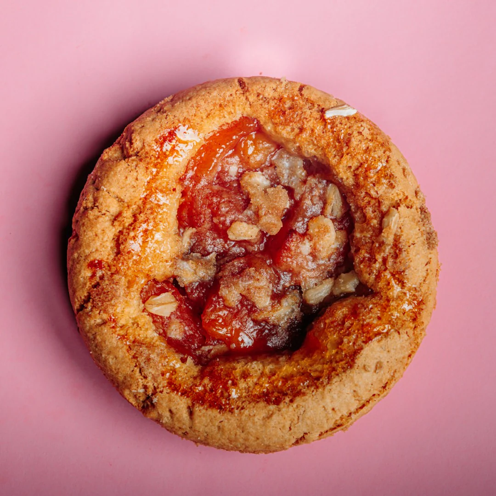

Peach Cobbler Cookies
Home

Description
Meet peach cobbler: in cookie form! This thumbprint-style cookie is filled with warm-spiced peach filling, just
like peach cobbler. To prevent the cookies from getting too soft, keep the extras stored in the refrigerator.
Ingredients
- 1 cups diced, pitted, peeled fresh peaches
- 1/3 cup firmly packed brown sugar
- 1 tablespoon unsalted butter
Steps
- For filling: Place peaches, brown sugar, butter, vanilla, cinnamon, nutmeg, and salt to a small saucepan
over medium heat. Cook, stirring frequently, until mixture is boiling and sugar is dissolved, about 5
minutes.
- Stir lemon juice and cornstarch together in a small bowl until thoroughly combined; pour into the peaches
and stir to thoroughly incorporate. Continue to cook, stirring constantly, until thickened, 2 to 3 minutes.
Pour mixture into a heatproof container and refrigerate until thoroughly chilled, about 1 hour, or up to 2
days.
- For cookie dough: Beat butter, brown sugar, 1/2 cup white sugar, salt, cinnamon, and nutmeg together with an
electric mixer until light and fluffy, about 3 minutes. Add in egg, vanilla, and almond extract and beat for
1 minute more. Add in flour, baking powder, and baking soda and mix on low speed until mixture comes
together in a stiff dough.